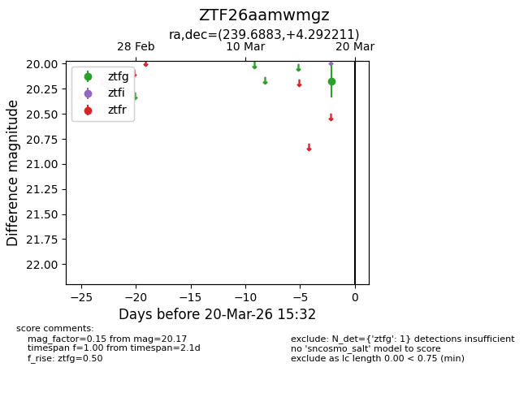
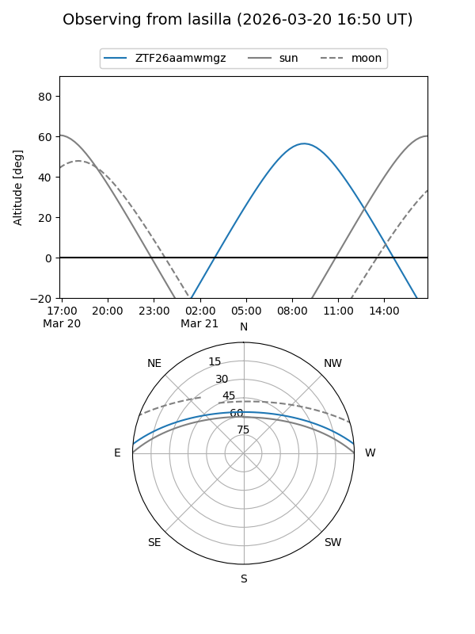
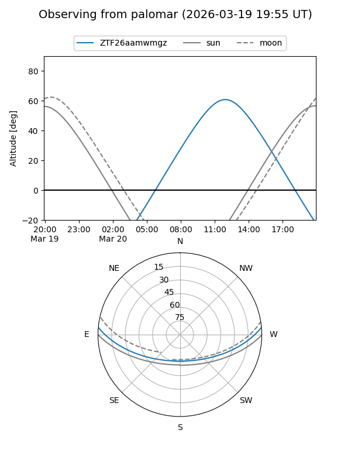

ZTF26aamwmgz
Target ZTF26aamwmgz at 2026-03-20 15:34
Aliases and brokers:
FINK: link
Lasair: link
ALeRCE: link
alt names
ZTF26aamwmgz (ztf,fink_ztf)
Coordinates:
equatorial (ra, dec) = 239.6883,+4.29221
equatorial (HMS+DMS) = 15:58:45.20,+04:17:31.96
galactic (l, b) = (14.3505,+39.89116)
Flags:
Photometry:
last ztfg=20.17
1 ztfg detections
Lightcurve

Visibility


Additional plots